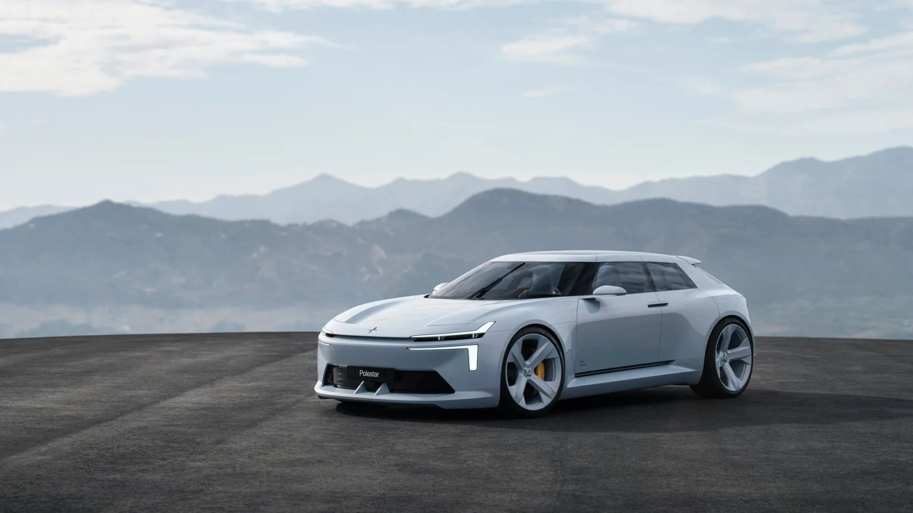
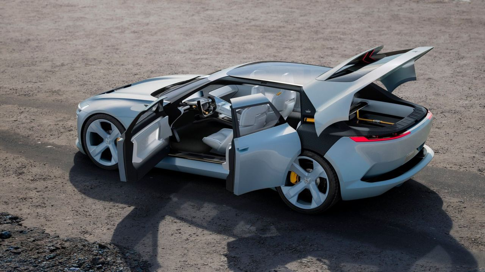
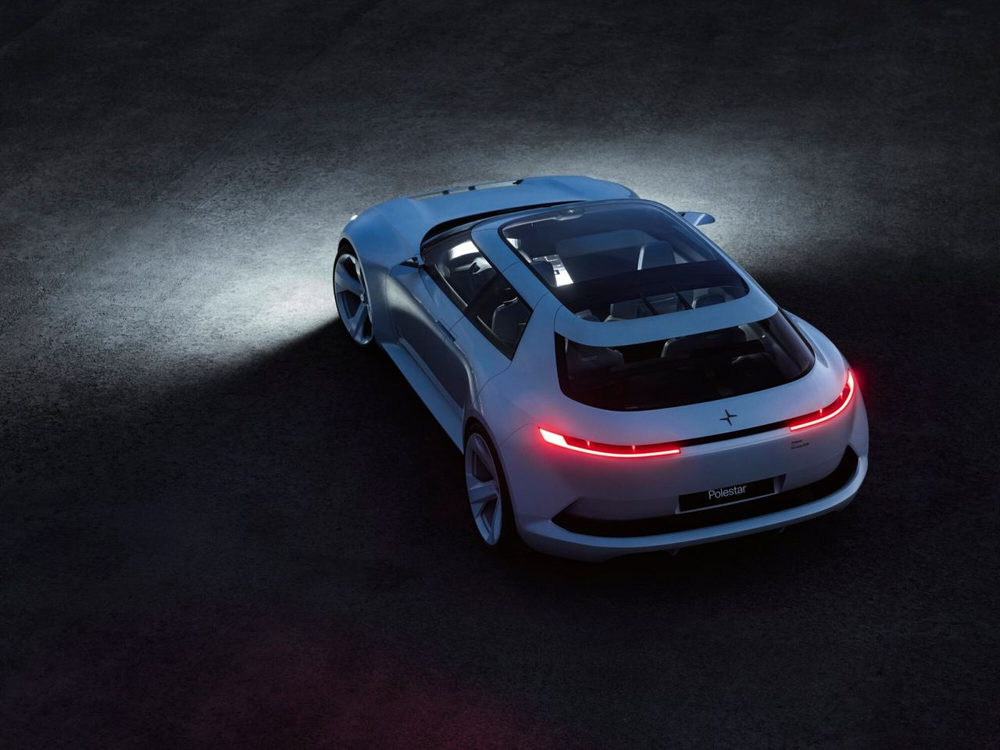
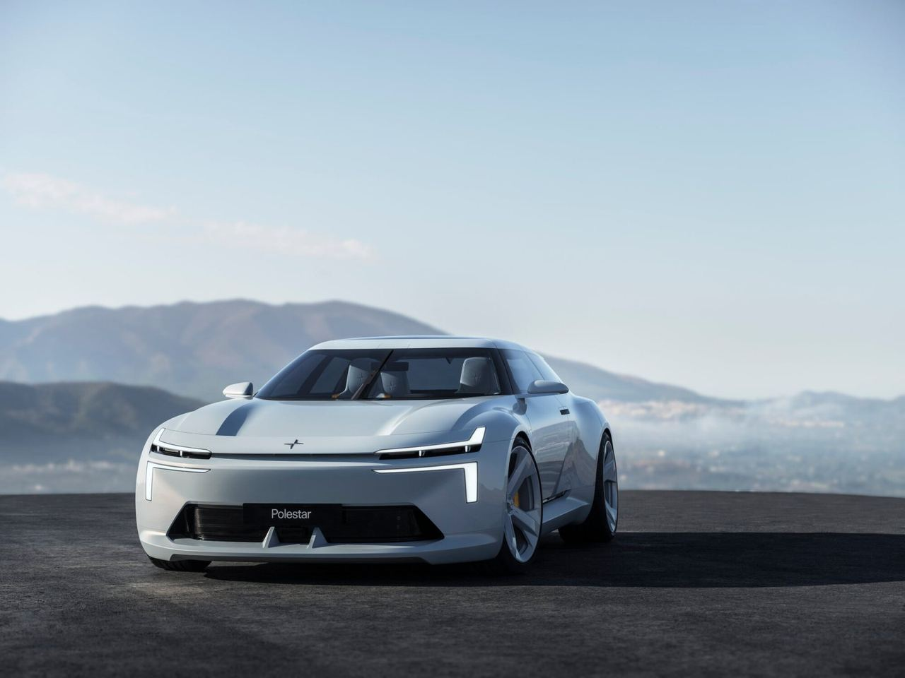

Polestar · 概念車 · 瑞典2026-11-10
Polestar Formula 2030 概念車：下一代 Polestar 2 的臉與單刃尾燈
Polestar unveils Formula 2030 concept, previewing the next Polestar 2
Polestar 11 月 10 日完整發表 Formula 2030 概念車，是 2024 年從 Audi 加入的設計總監 Philipp Römers 主導的第一台展示車。低矮四門跑車長 4,680mm、寬 2,021mm、高僅 1,350mm，官方說車頭就是 2027 年下一代 Polestar 2 的樣子，部分設計也會用在 2028 年的 Polestar 7。
設計解析 Design Notes
- 比例長引擎蓋、短前後懸，座艙往後推到粗壯的後輪拱上，配 22 吋中央鎖定輪圈；比現行 Polestar 2 低約 5 吋。
- 燈號保留 Dual Blade 頭燈，嵌進鯊魚鼻上方的空力翼；車尾捨棄滿版燈條，改用官方說會先於量產導入的 Single Blade 尾燈。
- 車門後門向後開、取消 B 柱，整個側面打開就是四張獨立座椅。
- 室內 UX20 吋 HyperDIM 曲面螢幕裝在轉向柱上，中控屏下方加回 8 個可自訂的實體控制件，內裝設計主管 Juan Pablo Bernal 說要重新平衡數位與實體。
- 品牌方向外觀設計主管 Nahum Escobedo 說想在演進中保留 Polestar 可辨識的核心設計價值；Ars Technica 認為兩廂側形讓人想起 Saab Aero-X。